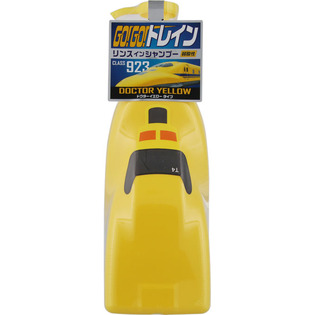

返回列表
产品名称：ゴーゴートレイン リンスインシャンプー（ドクターイエロー）

ダリヤ ゴーゴートレイン リンスインシャンプー（ドクターイエロー） ３００ｍｌ
メーカー ダリヤ
JANコード 4904651186327
商品の特徴
弱酸性
- 成分・分量
- ＜成分＞
水、ラウラミドプロピルベタイン、アルキル（C12，13）硫酸TEA、（C12，13）パレス-3硫酸Na、ラウロイルメチルアラニンNa、ジステアリン酸グリコール、安息香酸Na、オレンジ果汁、クエン酸、グリセリン、ポリクオタニウム-10、ポリクオタニウム-7、モモ果汁、ラウレス-25、リンゴ果汁、レモン果汁、EDTA-2Na、香料、黄4
- 用法及び用量
- -